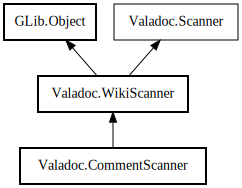

CommentScanner
Object Hierarchy:

Description:
public class CommentScanner :
WikiScanner
Content:
Creation methods:
Methods:
Fields:
Inherited Members:
All known members inherited from class Valadoc.WikiScanner
All known members inherited from class GLib.Object
All known members inherited from interface Valadoc.Scanner